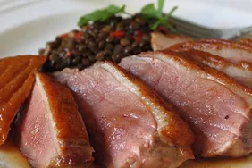

Sous Vide Duck Breast

Description
How about a sous vide duck recipe made with a simple, almost foolproof, stovetop method that requires no special equipment? Too good to be true?
Well, I'm happy to report it's so very true, and produced what my wife and I agreed was the best duck breast we've ever had.
Ingredients
- 2 (8 ounce) boneless duck breast halves, skin on
- salt and ground black pepper to taste
- 2 teaspoons fresh thyme leaves
- 1 teaspoon vegetable oil
Steps
- Cut several very shallow crosswise slashes across the skin of each duck breast about 1/2 inch apart. (The cuts should only barely cut into
the skin and fat; don't cut into the meat.) Season skin sides with salt, then generously season meat sides with salt, pepper, and thyme. Place
into a heavy-duty resealable plastic bag, squeeze out all the air, and seal. Refrigerate for 1 hour.
- Fill a large Dutch oven about 2/3 full with water and place over medium heat; heat to 135 degrees F (57 degrees C). Attach a candy thermometer
to the side of the Dutch oven in order to monitor and maintain the water temperature. Place a silicone hot pad into the bottom of the pot to keep
the plastic bag from contacting the bottom of the pan.
- Place the sealed plastic bag into the Dutch oven. Cook, moving the bag around occasionally and adjusting the heat as necessary to maintain the
temperature at 135 degrees F (57 degrees C), for 1 hour.
- Remove duck breasts from the plastic bag and pat dry. Generously season skin sides with salt.
- Heat oil in a skillet over high heat. Place duck breasts, skin-side down, in the hot skillet until fat renders and skin is golden brown, 5 minutes.
Turn breasts over and cook until lightly browned and meat still pink in the center, 1 minute. Let rest for 2 minutes before slicing.